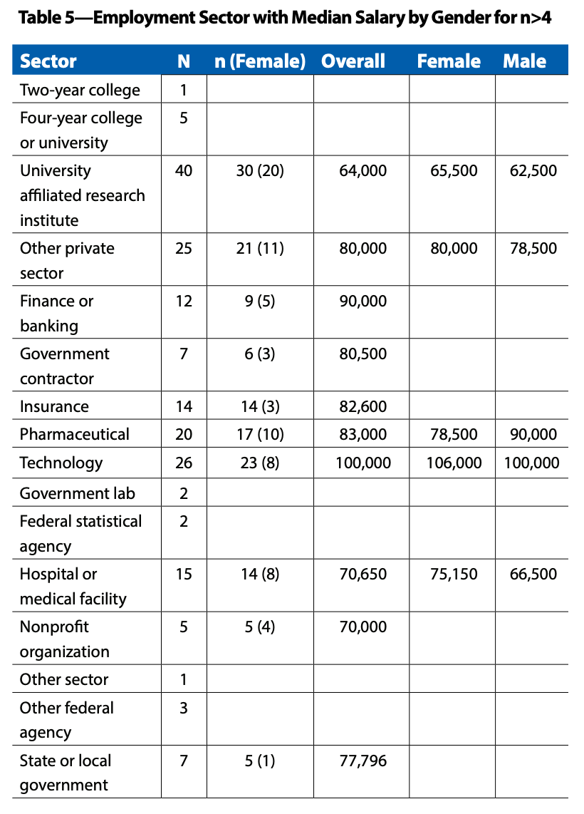

Course Introduction
Biostat 203B
Statistics and data science
Statistics, the science of data analysis, is the applied mathematics in the 21st century.
Data is increasing in volume, velocity, and variety.
My favorite definition of a data scientist:
A data scientist is someone who is better at statistics than any software engineer and better at software engineering than any statistician.
Big data in 1990s
| Data Size | Bytes | Storage Mode |
|---|---|---|
| tiny | \(10^2\) | piece of paper |
| small | \(10^4\) | a few pieces of paper |
| medium | \(10^6\) (MB) | a floppy disk |
| large | \(10^8\) | hard disk |
| huge | \(10^9\) (GB) | hard disk(s) |
| massive | \(10^{12}\) (TB) | hard disk(s); RAID storage |
Big data in 21st centry
4V’s of big data:

Source: IBM.
Who are hiring?
Following tables is based on a survey of 403 students who earned a master’s degree in statistics, biostatistics, or a related field (actuarial science, data science, informatics, math with stats focus) during the 2019–2020 academic year.

Source: AmStat News (2021 Nov).
there were more than 109 unique—although similar—job titles. The most common were data scientist (20), biostatistician (18), data analyst (9), biostatistician I (7), and statistician (5).
A typical data scientist on LinkedIn
A position posted by Genetech.

Course description
Why R?

More (free) UCLA resources for learning data science
IDRE workshops: https://idre.ucla.edu/calendar
QCBio workshops: https://qcb.ucla.edu/collaboratory/workshops/